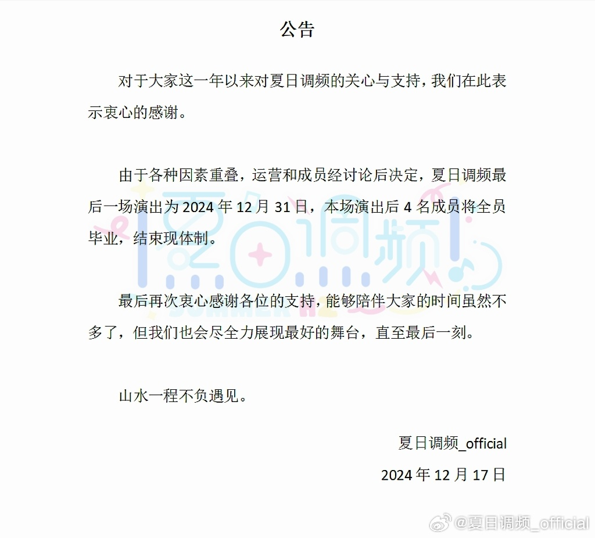

真的非常感谢大家一直以来的支持 希望大家都能快乐！！！ 提前祝大家2025一切顺利请大家开心的来跨年吧～💙
希望大家都能快乐！！！ 提前祝大家2025一切顺利请大家开心的来跨年吧～💙
@夏日调频_official:
【重要通知】⬇️
对于大家这一年以来对夏日调频的关心与支持，我们在此表示衷心的感谢。
由于各种因素重叠，运营和成员经讨论后决定，夏日调频最后一场演出为2024年12月31日，本场演出后4名成员将全员毕业，结束现体制。
最后再次衷心感谢各位的支持，能够陪伴大家的时间虽然不多了，但我们也会尽全力展现最好的舞台，直至最后一刻。
关于成员们之后的安排:
成员小椰、白榆会各自以新的形式从2025年开始新的活动。
成员蕾蕾、鱼丸由于现生工作、学业繁忙，将无限期停止偶像活动。
福利券、集章兑换以及未使用完的特典券请在2024年12月31日前使用完毕，感谢理解。
以上，再次向一直以来支持夏日调频的各位说一声谢谢。
对于大家这一年以来对夏日调频的关心与支持，我们在此表示衷心的感谢。
由于各种因素重叠，运营和成员经讨论后决定，夏日调频最后一场演出为2024年12月31日，本场演出后4名成员将全员毕业，结束现体制。
最后再次衷心感谢各位的支持，能够陪伴大家的时间虽然不多了，但我们也会尽全力展现最好的舞台，直至最后一刻。
关于成员们之后的安排:
成员小椰、白榆会各自以新的形式从2025年开始新的活动。
成员蕾蕾、鱼丸由于现生工作、学业繁忙，将无限期停止偶像活动。
福利券、集章兑换以及未使用完的特典券请在2024年12月31日前使用完毕，感谢理解。
以上，再次向一直以来支持夏日调频的各位说一声谢谢。
- 